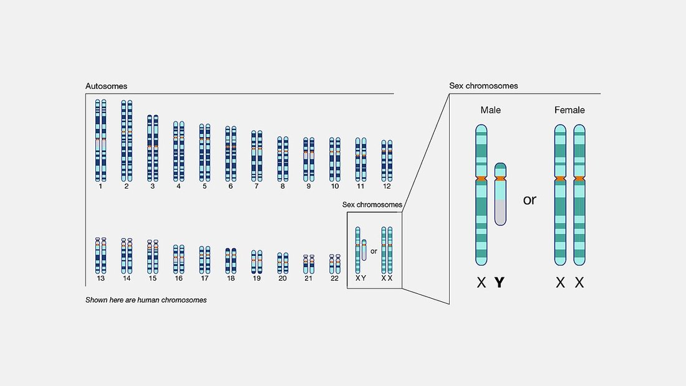
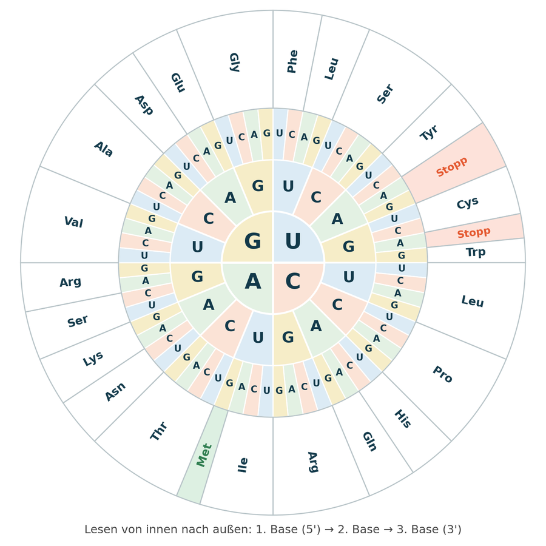
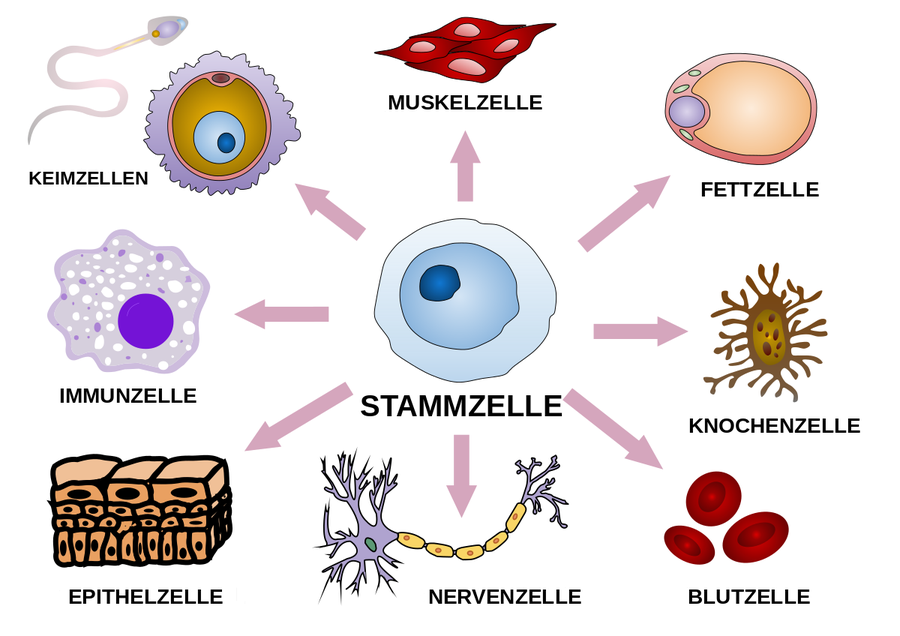
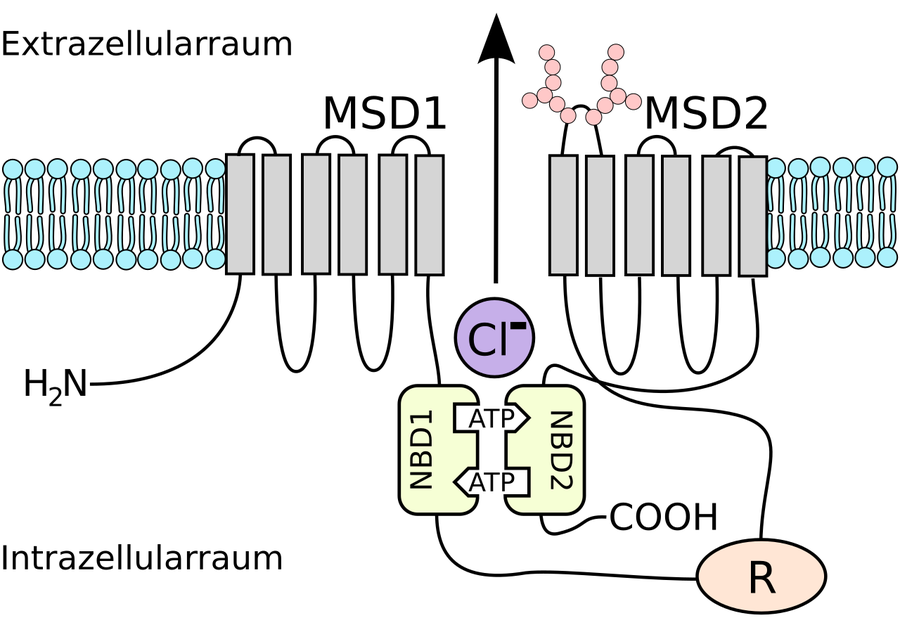
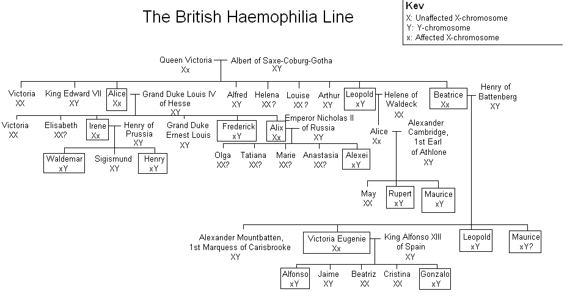

Selbstlernmodul zum Wiederholen und Üben · Teil A: Abitur-Handwerk · Teil B: Neurobiologie, Stoffwechselphysiologie, Ökologie, Genetik · Evolution folgt
Dieses Modul begleitet dich bis zum Abitur. In Teil A trainierst du das Handwerk, das jede Abituraufgabe verlangt: Operatoren, Diagramme auswerten, Experimente planen und deuten, ethisch bewerten. In Teil B wiederholst du die vier Inhaltsfelder der Qualifikationsphase. Die Evolution kommt dazu, sobald wir sie im Unterricht behandelt haben.
Sichere deine Antworten am Ende jeder Sitzung als Datei. Mit „Speicherstand laden“ machst du an jedem Gerät und in jedem Browser weiter, auch auf dem Tablet.
Teil A · Abitur-Handwerk
Der Operator sagt dir genau, was du tun sollst. Achtung: Ein Operator ist nicht fest an einen Anforderungsbereich gebunden – „erklären“ kann je nach Material leichter oder anspruchsvoller sein.
| Operator | Was er verlangt |
|---|---|
| nennen / angeben | Begriffe, Daten oder Sachverhalte ohne Erläuterung aufzählen |
| beschreiben | einen Sachverhalt oder ein Diagramm strukturiert und fachsprachlich wiedergeben – noch ohne Ursachen |
| erklären | einen Sachverhalt auf Ursachen, Gesetzmäßigkeiten oder Modelle zurückführen |
| erläutern | wie erklären, aber zusätzlich mit Beispielen oder weiteren Informationen veranschaulichen |
| auswerten | Daten oder Beobachtungen in einen Zusammenhang stellen und daraus Schlussfolgerungen ziehen |
| deuten | Ergebnisse oder Beobachtungen in einen biologischen Erklärungszusammenhang bringen |
| analysieren | wichtige Bestandteile, Eigenschaften oder Zusammenhänge auf eine Fragestellung hin herausarbeiten |
| Hypothesen aufstellen | eine fachlich begründete Vermutung über einen unbekannten Sachverhalt formulieren |
| ableiten | aus Daten oder Erkenntnissen sachgerechte Schlüsse ziehen |
| beurteilen | ein Sachurteil mithilfe fachlicher Kriterien begründen |
| bewerten | ein Werturteil unter Berücksichtigung gesellschaftlicher Werte und Normen begründen |
| diskutieren / erörtern | Argumente für und gegen eine These gegenüberstellen, abwägen und zu einem Ergebnis kommen |
Klassischer Fehler: Bei „beschreiben“ schon erklären – oder bei „erklären“ nur beschreiben. Und: Beurteilen = Sachurteil mit fachlichen Kriterien, bewerten = Werturteil mit Werten und Normen.
beschreiben · erklären · Hypothese aufstellen · beurteilen · bewerten · deuten
Limitierender Faktor: Ein Prozess, der von mehreren Faktoren abhängt, wird von dem Faktor begrenzt, der am stärksten im Mangel ist. Nur wenn man diesen Faktor erhöht, steigt die Rate.
Die y-Achse zeigt die Netto-Abgabe: Fotosynthese minus Zellatmung. Und überlege für jeden Abschnitt: Was würde passieren, wenn man nur das Licht – oder nur das CO₂ – erhöht?
richtig · richtig (mehr CO₂ → höheres Plateau; im unteren Plateau begrenzt also das CO₂. Was am oberen Plateau begrenzt, lässt sich aus der Abbildung allein nicht entscheiden) · falsch (im Dunkeln nur Zellatmung, also O₂-Aufnahme) · richtig · falsch (die Kurve erreicht ein Plateau; dann begrenzt ein anderer Faktor als das Licht – welcher, zeigt das Diagramm nicht. Denkbar sind z. B. CO₂, Temperatur oder die Enzymmenge im Calvin-Zyklus)
Die unabhängige Variable ist das, was die Experimentierenden aktiv verändern. Eine gute Hypothese nennt den Zusammenhang und begründet ihn biologisch.
Abstand der Lampe · Bläschen pro Minute · Erwärmung durch die Lampe – Temperatur beeinflusst die enzymatischen Reaktionen · Wasserbad oder Wärmeschutz · die dritte Hypothese: Zusammenhang plus fachliche Begründung. Zusätzlich sinnvoll: mehrere Messungen je Abstand und eine Eingewöhnungszeit nach jedem Umstellen.
Trenne sauber zwischen Sachaussagen (überprüfbar: „CRISPR/Cas kann ungewollte Mutationen verursachen“) und Werturteilen („Man darf nicht über das Erbgut Ungeborener bestimmen“).
Fallbeispiel: Mit der Genschere CRISPR/Cas lassen sich DNA-Abschnitte gezielt verändern. Bei einer Keimbahntherapie würde das Erbgut von Embryonen verändert. Eine Veränderung der Keimbahn kann an Nachkommen weitergegeben werden. Welche Kinder sie erben, hängt unter anderem davon ab, welche Keimzellen die Veränderung tragen. 2018 gab ein chinesischer Forscher bekannt, das Erbgut von Embryonen verändert zu haben; er wurde dafür international scharf kritisiert und in China verurteilt. In Deutschland ist die Keimbahnveränderung durch das Embryonenschutzgesetz verboten.
| Aussage | Art | Welcher Wert steckt dahinter? |
|---|---|---|
| Bei CRISPR/Cas kann es zu ungewollten Veränderungen an anderen Stellen des Genoms kommen. | ||
| Niemand darf über das Erbgut künftiger Menschen entscheiden, die selbst nicht zustimmen können. | ||
| Eltern sollten ihrem Kind schweres Leid durch eine Erbkrankheit ersparen dürfen. | ||
| Es wäre unfair, wenn sich nur wohlhabende Familien solche Eingriffe leisten könnten. | ||
| Bei einer somatischen Gentherapie werden nur Körperzellen verändert; die Veränderung wird nicht vererbt. |
Signalwörter für Werturteile: „darf“, „sollte“, „unfair“, „gerecht“. Sachaussagen lassen sich mit Studien oder Fakten überprüfen.
Sachaussage · Werturteil/Selbstbestimmung · Werturteil/Nichtschaden und Fürsorge · Werturteil/Gerechtigkeit · Sachaussage
Bewerte, ob Eingriffe in die menschliche Keimbahn zur Verhinderung schwerer Erbkrankheiten erlaubt werden sollten (ca. 10–15 Sätze).
Schemata, Kurven und Modelle (z. B. Synapsenschema, Code-Sonne, Schlüssel-Schloss-Modell) vereinfachen die Wirklichkeit, um einen Aspekt verständlich zu machen. Im Abitur sollst du sie nicht nur nutzen, sondern auch ihre Grenzen benennen: Was zeigt das Modell – und was nicht (Größenverhältnisse, zeitlicher Ablauf, Dynamik, Ausnahmen)?
Basiskonzepte verbinden die Inhaltsfelder. Sie helfen dir, Neues einzuordnen und Inhaltsfelder zu vernetzen:
Frage dich jeweils: Geht es um Bau und Leistung (Struktur), um Stoffe und Energie, um Signale und Codes, um Rückkopplung – oder um Anpassung und Entwicklung?
Struktur und Funktion (Oberflächenvergrößerung) · Steuerung und Regelung · Information und Kommunikation · Stoff- und Energieumwandlung (energetische Kopplung) · Individuelle und evolutive Entwicklung · den zeitlichen Ablauf und die echten Größenverhältnisse – ein statisches Schema bildet keine Dynamik ab.
Teil B · Inhaltsfelder
An der Membran einer ruhenden Nervenzelle misst man eine Spannung von etwa −70 mV (innen negativ). Sie entsteht, weil Ionen ungleich verteilt sind – innen viel K⁺ und große, negativ geladene Proteine (Anionen), außen viel Na⁺ und Cl⁻ – und weil die Membran in Ruhe vor allem für K⁺ durchlässig ist (offene Kaliumkanäle). K⁺ strömt dem Konzentrationsgefälle folgend aus, bis die entstehende Ladung weiteren Ausstrom bremst. Die Natrium-Kalium-Pumpe erhält die Ungleichverteilung unter ATP-Verbrauch: Sie befördert 3 Na⁺ hinaus und 2 K⁺ hinein.
Wird die Membran bis zum Schwellenwert (etwa −50 mV) depolarisiert, öffnen sich spannungsgesteuerte Na⁺-Kanäle: Na⁺ strömt ein, das Potenzial steigt bis etwa +30 mV (Depolarisation). Dann werden die Na⁺-Kanäle inaktiviert, spannungsgesteuerte K⁺-Kanäle öffnen, K⁺ strömt aus (Repolarisation). Weil sie verzögert schließen, wird das Potenzial kurz negativer als in Ruhe (Hyperpolarisation). Aktionspotenziale folgen dem Alles-oder-Nichts-Prinzip; die Reizstärke wird über die Frequenz verschlüsselt. In der absoluten Refraktärzeit ist kein neues AP möglich, weil die Na⁺-Kanäle inaktiviert sind; in der anschließenden relativen Refraktärzeit kann nur ein stärkerer Reiz ein AP auslösen. Deshalb läuft die Erregung nicht zurück.
Erregungsleitung: Bei marklosen Axonen kontinuierlich, bei markhaltigen saltatorisch: Die Erregung „springt“ von Schnürring zu Schnürring – das ist viel schneller und energiesparender.
Messung: Eine Mikroelektrode im Axon und eine Bezugselektrode außen; die Spannung wird mit einem Oszilloskop bzw. einem Messverstärker aufgezeichnet.
Erreicht ein AP das Endknöpfchen, öffnen sich spannungsgesteuerte Ca²⁺-Kanäle. Ca²⁺ strömt ein und bewirkt, dass Vesikel mit dem Transmitter (z. B. Acetylcholin) mit der Membran verschmelzen. Der Transmitter diffundiert durch den synaptischen Spalt und bindet an Rezeptoren der postsynaptischen Membran. Diese Rezeptoren sind ligandengesteuerte Kationenkanäle: Na⁺ strömt ein, K⁺ strömt aus. Weil beim Ruhepotenzial der Einstrom positiver Ladung überwiegt, wird die Membran depolarisiert – es entsteht ein erregendes postsynaptisches Potenzial (EPSP), an der motorischen Endplatte ein Endplattenpotenzial. Das Enzym Acetylcholinesterase spaltet den Transmitter in Acetat und Cholin; vor allem das Cholin wird ins Endknöpfchen wieder aufgenommen und zur Neusynthese genutzt. An der neuromuskulären Synapse (motorische Endplatte) löst die Erregung die Muskelkontraktion aus.
Die gestrichelte Linie liegt bei etwa −50 mV. Was muss erreicht werden, damit überhaupt ein AP entsteht?
1 Ruhepotenzial · 2 Depolarisation (Na⁺-Einstrom) · 3 Repolarisation (Na⁺-Kanäle inaktiviert, K⁺-Ausstrom) · 4 Hyperpolarisation (K⁺-Kanäle schließen verzögert) · 5 Schwellenwert
Erinnere dich an das Alles-oder-Nichts-Prinzip: Wie wird die Reizstärke dann überhaupt weitergegeben?
falsch (vor allem für K⁺) · richtig · falsch (Alles-oder-Nichts; ein stärkerer Reiz erhöht die AP-Frequenz) · richtig (der gerade erregte Abschnitt ist refraktär) · richtig (dazwischen isoliert die Myelinscheide)
Bringe die Schritte in die richtige Reihenfolge (1 = zuerst).
Elektrisch – chemisch – elektrisch: Erst kommt die Erregung an, dann wird ein Stoff freigesetzt, dann entsteht auf der anderen Seite wieder ein Potenzial.
1 AP erreicht Endknöpfchen · 2 Ca²⁺-Einstrom · 3 Exocytose · 4 Bindung an Rezeptoren · 5 EPSP · 6 Spaltung durch Acetylcholinesterase
Frage immer: Kommt am Muskel noch ein Signal an – oder hört das Signal gar nicht mehr auf?
schlaffe Lähmung (kein EPSP) · Dauerkontraktion und Krämpfe (ACh wird nicht abgebaut, Dauererregung) · schlaffe Lähmung (kein Transmitter) · Antagonist · Agonist
Potenzialmessung: Man misst die Spannung zwischen einer Mikroelektrode im Zellinneren und einer Bezugselektrode außen. Sobald die Mikroelektrode die Membran durchsticht, springt die Anzeige von 0 auf etwa −70 mV. Mit Stoffen, die gezielt Kanäle oder Pumpen blockieren, kann man prüfen, welche Moleküle für welchen Teil der Kurve verantwortlich sind.
Beim K⁺: Das Ruhepotenzial entsteht durch K⁺-Ausstrom entlang des Konzentrationsgefälles. Was passiert mit dem Gefälle, wenn außen mehr K⁺ ist? Bei Ouabain: Die Pumpe hält die Gradienten aufrecht, sie erzeugt das Potenzial aber nicht direkt.
am Axonhügel · 0 mV (beide Elektroden außen) · weniger negativ – das Konzentrationsgefälle für K⁺ wird kleiner, es strömt weniger K⁺ aus · langsam schwächer – ohne Pumpe gleichen sich die Gradienten durch Leckströme allmählich aus · normales Ruhepotenzial, aber kein AP – die Na⁺-Kanäle für die Depolarisation sind blockiert.
Ordne jedem Kriterium die passende Erregungsleitung zu.
Bei der saltatorischen Leitung ist der Ionenaustausch auf die Schnürringe beschränkt. Was bedeutet das für Zeit und Energie?
saltatorisch · kontinuierlich · saltatorisch · kontinuierlich · kontinuierlich. Folgerung: Die Myelinisierung erlaubt schnelle Leitung bei dünnen Axonen – Platz und Energie werden gespart.
Für eine Stellungnahme zum Einsatz von Schmerzmitteln brauchst du zuerst sichere Sachaussagen.
Denk an die Opioidkrise in den USA: Welche Risiken haben starke Schmerzmittel neben der Wirkung?
richtig · richtig · falsch – Opioide können abhängig machen und in hoher Dosis die Atmung lähmen · normative Aussage. Für die Stellungnahme wägst du Schmerzlinderung (Lebensqualität, Fürsorge) gegen Risiken (Abhängigkeit, Nebenwirkungen, Missbrauch) ab.
Ort ist der Chloroplast. In der Primärreaktion (lichtabhängige Reaktion) an der Thylakoidmembran absorbieren Chlorophylle Lichtenergie. Wasser wird gespalten (Fotolyse) – dabei entsteht der Sauerstoff. Über eine Elektronentransportkette werden NADPH+H⁺ und – chemiosmotisch – ATP gebildet. In der Sekundärreaktion, dem Calvin-Zyklus im Stroma, wird CO₂ in drei Phasen zu Zucker aufgebaut: Fixierung (das Enzym RuBisCO bindet CO₂ an Ribulose-1,5-bisphosphat), Reduktion (mit ATP und NADPH+H⁺) und Regeneration des Akzeptors.
Absorptions- und Wirkungsspektrum: Chlorophyll absorbiert vor allem blaues und rotes Licht, grünes kaum (deshalb sehen Blätter grün aus). Das Wirkungsspektrum zeigt, bei welchen Wellenlängen die Fotosynthese wie stark abläuft. Blattfarbstoffe kann man durch Dünnschichtchromatografie trennen: Sie wandern je nach Löslichkeit im Laufmittel und Haftung an der Trägerschicht unterschiedlich weit.
| Teilschritt | Ort | Bilanz pro Glucose (vereinfacht) |
|---|---|---|
| Glykolyse | Cytoplasma | Glucose → 2 Pyruvat; netto 2 ATP, 2 NADH+H⁺ |
| oxidative Decarboxylierung | Mitochondrienmatrix | 2 Pyruvat → 2 Acetyl-CoA; 2 CO₂, 2 NADH+H⁺ |
| Tricarbonsäurezyklus (Citratzyklus) | Mitochondrienmatrix | 4 CO₂, 6 NADH+H⁺, 2 FADH₂, 2 ATP |
| Atmungskette | innere Mitochondrienmembran | Elektronen auf O₂ → H₂O; Protonengradient; ATP-Synthase bildet den größten Teil des ATP |
Insgesamt entstehen pro Glucose rund 30 ATP. Ohne Sauerstoff als Endakzeptor stoppt die Atmungskette.
Merkhilfe: Wo Elektronen über eine Kette weitergegeben werden, braucht es eine Membran – nur so kann ein Protonengradient entstehen.
Cytoplasma · Mitochondrienmatrix · innere Mitochondrienmembran · Thylakoidmembran · Stroma
Beim Sauerstoff hilft ein Gedanke an die Fotolyse. Beim CO₂: In welchen Schritten werden Kohlenstoffatome abgespalten?
aus dem Wasser · ATP und NADPH+H⁺ · Fixierung · 2 · oxidative Decarboxylierung und Tricarbonsäurezyklus · O₂ (es wird zu Wasser reduziert)
Die ATP-Synthase des Chloroplasten ragt mit ihrem Kopf ins Stroma, wo das ATP für den Calvin-Zyklus gebraucht wird. Von wo nach wo fließen die Protonen dann durch sie hindurch?
richtig · falsch (in den Thylakoidinnenraum; zurück ins Stroma strömen sie durch die ATP-Synthase) · falsch (grün wird kaum absorbiert, sondern reflektiert) · falsch (an einer anderen Stelle – dem allosterischen Zentrum) · richtig (Endprodukthemmung der Phosphofructokinase) · richtig
Beim Rf-Wert teilst du die kleinere durch die größere Strecke – das Ergebnis liegt immer zwischen 0 und 1.
Fotosynthese · Gasaustausch · Verdunstungsschutz · Atmungskette · ATP-ADP-Austausch über ein Transportprotein (Kompartimentierung) · 3,6 ÷ 9,0 = 0,4 · akzessorische Pigmente (Carotinoide) · Oberhalb des Optimums steigen vor allem die Verluste: RuBisCO bindet bei Wärme häufiger O₂ statt CO₂ (Fotorespiration), die Zellatmung nimmt zu, und die Aktivierung von RuBisCO wird beeinträchtigt. Eine Denaturierung von Enzymen ist erst bei starker Hitzebelastung zu erwarten.
Erinnere dich an die Regulation: Wann arbeitet die ATP-Synthase überhaupt – und was passiert, wenn genug ATP da ist?
richtig · falsch · richtig – die Zellatmung wird über den Energiebedarf reguliert, ein einzelner Überträger ist bei Gesunden in der Regel nicht der begrenzende Faktor · belastbare Studien. Ein Werbeversprechen ersetzt keinen Wirksamkeitsnachweis.
Bei der letzten Frage geht es um den Unterschied zwischen physiologischer und ökologischer Potenz.
Minimum · Optimum · Maximum · Toleranzbereich (zwischen Minimum und Maximum – einschließlich der Pessima) · stenök · Konkurrenz: Die physiologische Potenz (Reinkultur) ist breiter als die ökologische (Mischkultur), weil konkurrenzstärkere Arten die Pflanze bei pH 6 verdrängen. Bei pH 4 sind die Konkurrenten schwächer, dort kann sie bestehen.
„intra“ = innerhalb derselben Art, „inter“ = zwischen verschiedenen Arten.
Parasitismus · Symbiose · Räuber-Beute · intraspezifische Konkurrenz · interspezifische Konkurrenz (um Licht)
Die 10-%-Regel gilt pro Stufe: Produzenten → Primärkonsumenten → Sekundärkonsumenten sind zwei Schritte. Im Moor ist sehr viel Kohlenstoff gespeichert – was passiert, wenn Luft an den Torf kommt?
bindet CO₂ · setzt CO₂ frei (Torf wird zersetzt) · setzt CO₂ frei (Zellatmung der Destruenten) · 200 kJ (20 000 → 2 000 → 200) · Gesamtheit der Ansprüche und Wechselbeziehungen · falsch – Energie fließt durch das Ökosystem und wird als Wärme abgegeben, Stoffe zirkulieren.
So könnte ein kleiner dichotomer Bestimmungsschlüssel für Gehölze aussehen:
Bei einer Untersuchung im Gelände misst man abiotische Faktoren (Licht, Temperatur, Bodenfeuchte, pH) und erfasst die Arten. Zeigerpflanzen verraten Standortbedingungen: Die Brennnessel zeigt stickstoffreiche Böden an, Torfmoose nasse, saure und nährstoffarme Standorte.
Anthropogene Eingriffe wirken über Ursache-Wirkungs-Ketten: Starke Düngung gelangt in Gewässer → Algenwachstum (Eutrophierung) → abgestorbene Algen werden von Destruenten unter O₂-Verbrauch abgebaut → Sauerstoffmangel, Fischsterben. Entwässerte Moore setzen CO₂ frei, weil der Torf an der Luft abgebaut wird; Wiedervernässung bremst den Torfabbau stark, verringert so die CO₂-Freisetzung und schafft Lebensraum für spezialisierte Arten. Begradigte Flüsse verlieren Auen und Strukturvielfalt; Renaturierung stellt sie teilweise wieder her.
Lies den Bestimmungsschlüssel Schritt für Schritt: Nadel oder Laubblatt? Dann das nächste Merkmalspaar. Bei der Eutrophierung: Wer verbraucht Sauerstoff, wenn viel Biomasse abstirbt?
Weißtanne (1a → 2a) · Esche (1b → 3a) · stickstoffreicher Boden durch Düngereintrag · Abbau der Biomasse durch Destruenten · Wiedervernässung · Arealverschiebung. Weitere Folgen: Extremwetter, Meeresspiegelanstieg, veränderte Konkurrenzverhältnisse.
Ein entwässertes Moor wird seit Jahrzehnten als Grünland für die Milchviehhaltung genutzt. Der Landkreis plant, es wiederzuvernässen. Bewerte das Vorhaben unter Nachhaltigkeitsaspekten (ca. 10–12 Sätze).

Bakterien wachsen lange in einem Medium mit schwerem Stickstoff (¹⁵N) und werden dann in ein Medium mit leichtem Stickstoff (¹⁴N) überführt. Die DNA wird nach jeder Zellteilung durch Dichtegradientenzentrifugation untersucht.
Zeichne dir die Doppelstränge auf: schwerer Strang dick, leichter dünn. Bei semikonservativer Replikation behält jede neue DNA einen alten Strang.
nur eine mittlere Bande (alle DNA ist ¹⁵N/¹⁴N-Hybrid) · eine mittlere und eine leichte Bande (je zur Hälfte) · konservativ: eine schwere (alte DNA) und eine leichte Bande (komplett neue DNA) – genau das wurde nicht beobachtet.
Ausschnitt aus der Codetabelle: AUG = Met (Start) · GCU, GCA = Ala · UGG = Trp · AAA, AAG = Lys · GAA = Glu · UAG, UGA = Stopp
Ausgangs-mRNA: 5'-AUG GCU UGG AAA UAG-3'

Übersetze erst die veränderte mRNA mit der Tabelle und vergleiche dann mit dem Original: gleiche Aminosäure, andere Aminosäure oder Stopp?
Met – Ala – Trp – Lys · stumm (GCA = Ala) · Nonsense (UGA = Stopp, verkürztes Protein) · Missense (Lys → Glu) · Rasterschub (alle folgenden Codons verschoben) · Rasterschub am Anfang: Die gesamte folgende Sequenz ist verändert, oft entsteht bald ein Stoppcodon.

Epigenetik heißt wörtlich „über der Genetik“: Es wird etwas an die DNA angehängt – die Buchstaben selbst bleiben gleich.
richtig (differenzielle Genaktivität) · richtig · falsch · richtig · falsch (die Muster werden im Lauf des Lebens unterschiedlicher) · falsch (nur Körperzellen werden verändert, nicht die Keimzellen)
Ordne jedes Merkmal der Proteinbiosynthese zu.
Prokaryoten haben keinen Zellkern. Was bedeutet das für den Ort und die zeitliche Abfolge von Transkription und Translation?
Eukaryoten · Prokaryoten (Kopplung, kein Zellkern) · Eukaryoten · beide (nahezu universeller Code) · Prokaryoten. Die Kompartimentierung der Eukaryoten erlaubt zusätzliche Regulationsebenen, z. B. die Prozessierung der mRNA.

Lena ist gesund – also kann sie nicht aa sein. Von den drei verbleibenden Feldern im Kreuzungsschema Aa × Aa (AA, Aa, aA) sind wie viele Träger?
2/3 (AA, Aa, aA – zwei von drei sind Träger) · 2/3 × 1/4 = 1/6 · Trägerstatus klären: als Trägerin 1/4, sonst 0 · Recht auf Nichtwissen. Genetische Beratung informiert ergebnisoffen; die Entscheidung trifft die ratsuchende Person.
Rechne Schritt für Schritt von oben nach unten: (1) II-2 ist gesund – also nicht aa. Wie viele der verbleibenden Kombinationen aus Aa × Aa sind Träger? (2) Gibt II-2 ihr a mit welcher Wahrscheinlichkeit an III-1 weiter? (3) Für das Kind müssen beide Eltern Träger sein und beide ein a weitergeben. Unabhängige Wahrscheinlichkeiten werden multipliziert. Bei der letzten Frage: Was weiß man sicher, sobald ein Kind erkrankt ist?
Erbgang: I-1 × I-2 → II-3: Gesunde Eltern haben eine erkrankte Tochter → rezessiv. Die erkrankte Tochter II-3 hat einen gesunden Vater I-1 → nicht X-chromosomal-rezessiv. Also autosomal-rezessiv; I-1 und I-2 sind beide Aa.
II-2 ist gesund (AA, Aa oder aA – nicht aa) → Trägerin mit 2/3. Gleiches gilt für ihren Bruder II-4.
III-1: Sein Vater II-1 ist AA. III-1 ist nur Träger, wenn II-2 Trägerin ist und das a weitergibt: 2/3 · 1/2 = 1/3. Ebenso III-2: 1/3.
IV-1: 1/3 · 1/3 · 1/4 = 1/36 (beide Träger, und beide geben a weiter).
Verwandtenehe: Das seltene Allel kann über die gemeinsamen Großeltern I-1/I-2 in beide Familienzweige gelangt sein. Bei einem nicht verwandten Partner aus der Bevölkerung wäre die Wahrscheinlichkeit, ebenfalls Träger zu sein, viel kleiner.
Zweites Kind: Ist ein Kind erkrankt, steht fest, dass beide Eltern Aa sind. Das Risiko für jedes weitere Kind beträgt dann 1/4 – unabhängig davon, wie viele Kinder schon erkrankt sind. Ein Trägertest bei III-1 und III-2 könnte die Unsicherheit von vornherein klären.

Ein Sohn bekommt sein X-Chromosom immer von der Mutter, sein Y vom Vater. Eine Tochter bekommt ein X von der Mutter und das einzige X des Vaters. Zeichne für die Fragen 4 und 5 ein kleines Kreuzungsschema.
Xx – Victoria war gesund, hatte aber erkrankte Söhne (Leopold) und Konduktorinnen als Töchter · Männer sind hemizygot: Ihr einziges X entscheidet · von Alix (Konduktorin, Tochter der Konduktorin Alice); der Vater gibt seinem Sohn nur das Y · Töchter alle Xx, Söhne alle XY: Jede Tochter erhält Leopolds x und von Helene ein X; jeder Sohn erhält Leopolds Y und von Helene ein X. Dass alle Söhne gesund sind, liegt also an der Mutter Helene (XX), nicht am Vater · 1/2 (Xx × XY → XY, xY: jeder zweite Sohn) · Edward VII. hatte kein Hämophilie-Allel, also konnte er es auch nicht vererben.
Abituraufgaben verknüpfen oft zwei Inhaltsfelder. Hier kannst du das üben.
Erkläre ausgehend von der Wirkung auf die Atmungskette, warum Nervenzellen bei einer Cyanidvergiftung ihre Funktion verlieren.
Diese Station wird ergänzt, sobald wir die Evolution im Unterricht behandelt haben. Laut Abiturvorgaben 2027 gehören dazu:
Sichere deine Antworten am Ende jeder Sitzung als Datei. Mit „Speicherstand laden“ machst du an jedem Gerät und in jedem Browser weiter, auch auf dem Tablet.
Automatisch werden deine Antworten nur in diesem Browser auf diesem Gerät gespeichert. Die Speicherdatei funktioniert überall.
Grundlage: Ministerium für Schule und Bildung NRW, Abiturvorgaben 2027 Biologie (abitur.nrw); Operatorenübersicht Biologie.